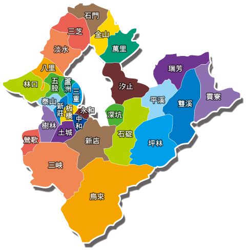

新北市是中華民國的直轄市，為中華民國人口排名第一的都市。全境環繞臺北市，東北則三面環繞臺灣省基隆市，東南鄰臺灣省宜蘭縣，西南鄰桃園市；其所轄石門區富貴角地處臺灣本島最北端，貢寮區三貂角地處臺灣本島最東端。全市共劃分為29區，其中政府所在地位於板橋區。
新北市是臺灣本島最北的城市，環繞整個臺北市，總面積達二千多平方公里， ... 板橋林本源園邸、鶯歌陶瓷、三峽老街等各類風景及名勝古蹟、風光特殊令人無不嚮往。以下資料均由新北市政府古蹟歷史建築聚落及文化景觀審議委員會認定
新北市文化歷史古蹟巡禮